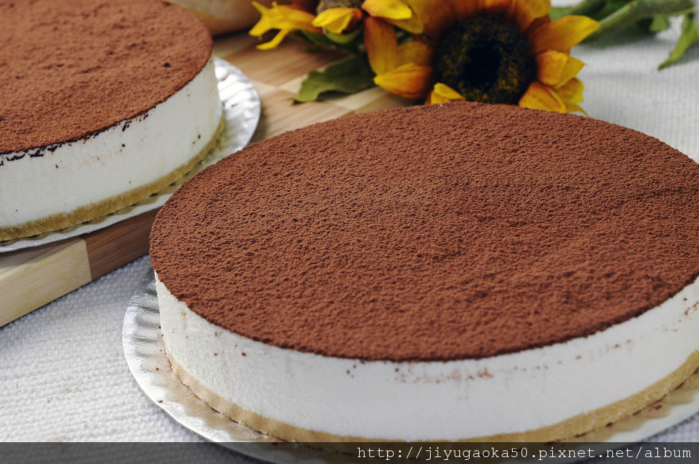

重複前述製程，鋪上手指餅或蛋糕後，抹一層馬斯卡彭起士等混合物，再抹一層奶油或巧克力碎片後，不用烘焙，
加蓋放入冰箱冷藏4至6小時，或隔夜吃味道更棒，享用時在糕點表面灑上可口粉（cocoa powder），風味絕佳。
義大利文的提拉米蘇（Tiramisu）含有「帶我走」之意，帶走的不只是美味，還有甜蜜與幸福。
因為它含有咖啡、甜酒、糖和起士，吃後令人充滿幸福與甜蜜的感覺。相傳它的由來，與一個溫馨浪漫的愛情故事有關。
在一個戰爭的年代，有位義大利士兵要出征，他的愛妻為了給他準備乾糧，
就把家中僅存的餅乾、乳製品、蛋黃、糖…等，做成一個充滿愛意的糕點，她把它稱為「提拉米蘇（Tiramisu）」。
因為在她的內心深處，一直對著丈夫吶喊「帶我走」吧！縱使須赴前線！
但是，殘酷的事實總與願望相違，那就把我真誠的愛意帶走吧！我的達令記得早日平安歸來！在天願作比翼鳥，在地願為連理枝。
果然，「精誠所至，金石為開」，這位士兵在戰場上吃到香濃美味的提拉米蘇時，
就禁不住想起家中的愛妻，雖然人隔兩地，但是同心永結，當戰爭一結束就回到愛妻的身旁。
